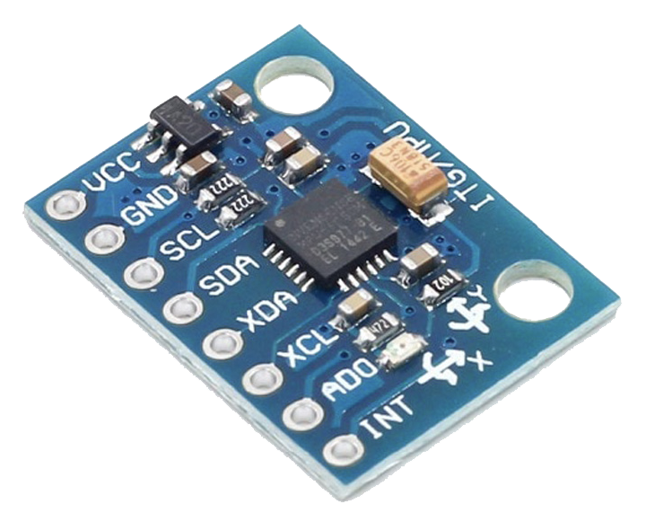

PHYS-S12 Intro to Digital Fabrication
MPU 6050 Readings
Overview:
I was going to use and MPU 6050 for my final project so I decided to map and read the values for this assignment. It was realativley straight forward, I plugged the SCL and SCA pins in an power and ground. Then I uploaded the given code and it worked.
Procedure
I first started with wiring the MPU to the wiring diagram provided.
The power and ground were connected to the power and ground of the arduino and the SCL and SDA were connected to A4 and A5 respectively.
Next I ran the code below, it allows for temperature, yaw, pitch, roll and rotational acceleration readings.
// Basic demo for accelerometer readings from Adafruit MPU6050
// ESP32 Guide: https://RandomNerdTutorials.com/esp32-mpu-6050-accelerometer-gyroscope-arduino/
// ESP8266 Guide: https://RandomNerdTutorials.com/esp8266-nodemcu-mpu-6050-accelerometer-gyroscope-arduino/
// Arduino Guide: https://RandomNerdTutorials.com/arduino-mpu-6050-accelerometer-gyroscope/
#include
#include
#include
Adafruit_MPU6050 mpu;
void setup(void) {
Serial.begin(115200);
while (!Serial)
delay(10); // will pause Zero, Leonardo, etc until serial console opens
Serial.println("Adafruit MPU6050 test!");
// Try to initialize!
if (!mpu.begin()) {
Serial.println("Failed to find MPU6050 chip");
while (1) {
delay(10);
}
}
Serial.println("MPU6050 Found!");
mpu.setAccelerometerRange(MPU6050_RANGE_8_G);
Serial.print("Accelerometer range set to: ");
switch (mpu.getAccelerometerRange()) {
case MPU6050_RANGE_2_G:
Serial.println("+-2G");
break;
case MPU6050_RANGE_4_G:
Serial.println("+-4G");
break;
case MPU6050_RANGE_8_G:
Serial.println("+-8G");
break;
case MPU6050_RANGE_16_G:
Serial.println("+-16G");
break;
}
mpu.setGyroRange(MPU6050_RANGE_500_DEG);
Serial.print("Gyro range set to: ");
switch (mpu.getGyroRange()) {
case MPU6050_RANGE_250_DEG:
Serial.println("+- 250 deg/s");
break;
case MPU6050_RANGE_500_DEG:
Serial.println("+- 500 deg/s");
break;
case MPU6050_RANGE_1000_DEG:
Serial.println("+- 1000 deg/s");
break;
case MPU6050_RANGE_2000_DEG:
Serial.println("+- 2000 deg/s");
break;
}
mpu.setFilterBandwidth(MPU6050_BAND_5_HZ);
Serial.print("Filter bandwidth set to: ");
switch (mpu.getFilterBandwidth()) {
case MPU6050_BAND_260_HZ:
Serial.println("260 Hz");
break;
case MPU6050_BAND_184_HZ:
Serial.println("184 Hz");
break;
case MPU6050_BAND_94_HZ:
Serial.println("94 Hz");
break;
case MPU6050_BAND_44_HZ:
Serial.println("44 Hz");
break;
case MPU6050_BAND_21_HZ:
Serial.println("21 Hz");
break;
case MPU6050_BAND_10_HZ:
Serial.println("10 Hz");
break;
case MPU6050_BAND_5_HZ:
Serial.println("5 Hz");
break;
}
Serial.println("");
delay(100);
}
void loop() {
/* Get new sensor events with the readings */
sensors_event_t a, g, temp;
mpu.getEvent(&a, &g, &temp);
/* Print out the values */
Serial.print("Acceleration X: ");
Serial.print(a.acceleration.x);
Serial.print(", Y: ");
Serial.print(a.acceleration.y);
Serial.print(", Z: ");
Serial.print(a.acceleration.z);
Serial.println(" m/s^2");
Serial.print("Rotation X: ");
Serial.print(g.gyro.x);
Serial.print(", Y: ");
Serial.print(g.gyro.y);
Serial.print(", Z: ");
Serial.print(g.gyro.z);
Serial.println(" rad/s");
Serial.print("Temperature: ");
Serial.print(temp.temperature);
Serial.println(" degC");
Serial.println("");
delay(500);
}
This Arduino code reads Adafruit MPU6050 sensor data. The MPU6050 contains a gyroscope and accelerometer to detect movement. The program connects to the sensor and sets up precise measurement parameters. Code instructs the accelerometer and gyroscope what number range to use. This range demonstrates how sensitive the sensor is to different types of movement and spin.A low-frequency filter removes data noise and interference. After setup, the software loops, collecting data. Serial transmission displays these figures on a computer so we can monitor movement and rotation along different axes. The written output includes the sensor's temperature in degrees Celsius, its acceleration in meters per second squared, and its spin in radians per second. The sensor can deliver new data and the output doesn't get too crowded with a 500-millisecond pause between loops. This code illustrates how the gadget travels in real time, making it handy for monitoring motion, figuring out where something is facing, or robotics.
Minimum/Maximum Values
Temperature:
The temperature sensor on the MPU6050 provides a value in degrees Celsius. The temperature range is from -40°C to +85°C. For my values while testing I was only able to go from 29°C to 31°C. Although the MPU has the capability to read very high and very low values, it is almost impossible to reach those values.
Roll, Pitch, and Yaw:
The MPU6050 provides raw gyroscope readings for angular velocity along the X, Y, and Z axes. These readings can be integrated over time to obtain roll, pitch, and yaw angles. The raw gyroscope readings can range from approximately -32768 to 32767 (in two's complement form) for each axis. Again, while testing, I was unable to actually reach these values, however I did see a change in these values while testing.
Final Output